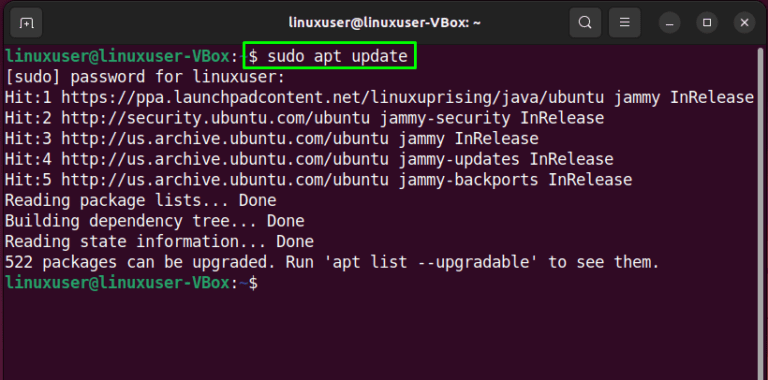
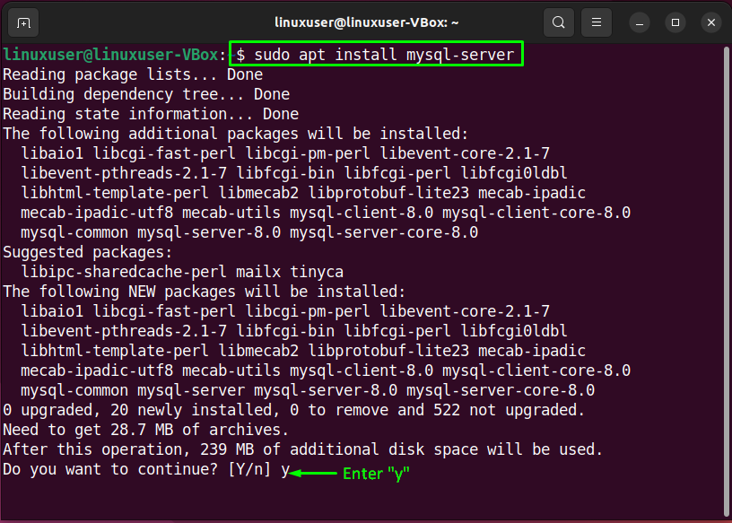
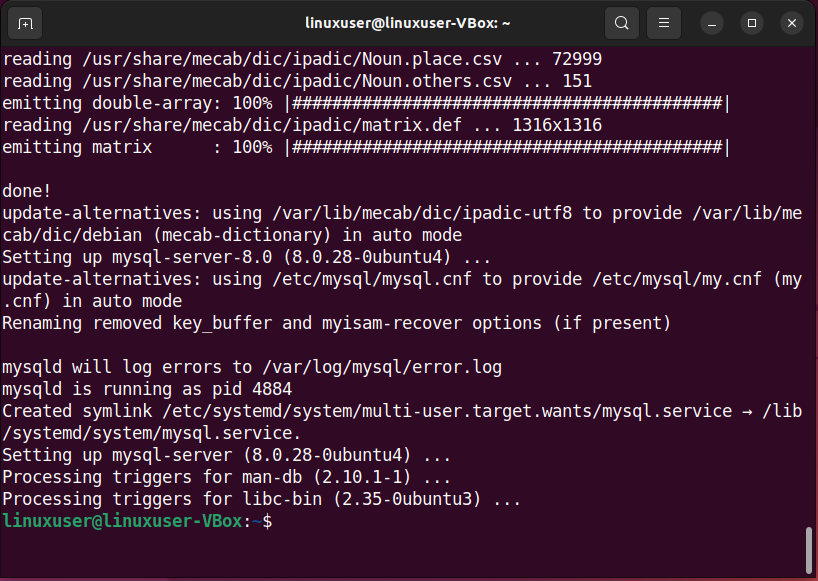
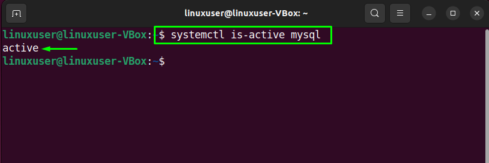
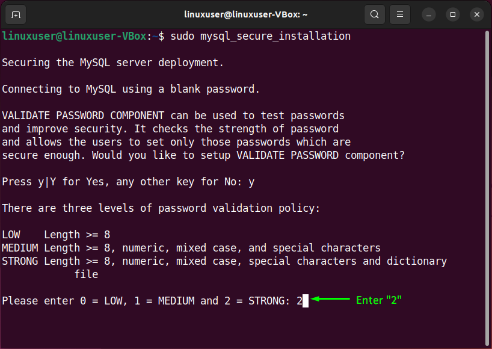
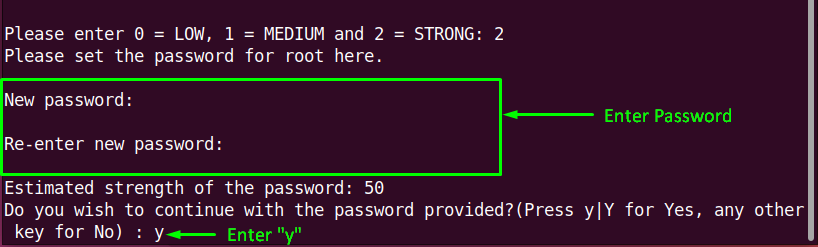
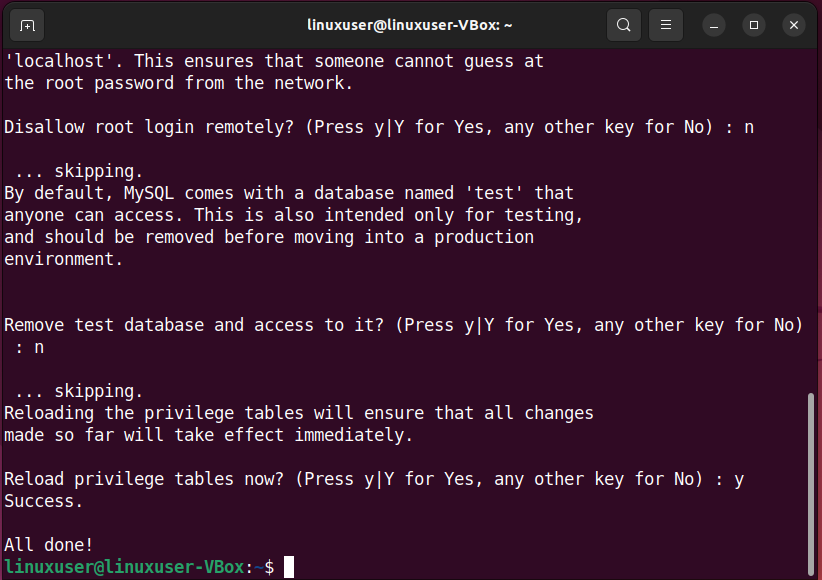

Install MySQL Workbench on Ubuntu 22.04
MySQL Workbench é um aplicativo Graphical User Interface (GUI) suportado pela Oracle Corporation para
gerenciamento de banco de dados MySQL. Este aplicativo também inclui uma coleção de outras ferramentas que
podem ser utilizadas ao trabalhar com bancos de dados MySQL. O MySQL Workbench é utilizado principalmente
pelos administradores de banco de dados, arquitetos,
e desenvolvedores para visualizar o design do banco de dados. Este artigo discutirá o método para instalar o
MySQL Workbench no Ubuntu 22.04. Então vamos começar! Nota: Como mencionamos anteriormente, o MySQL
Workbench é um aplicativo gráfico para o servidor “MySQL”. Para usar este utilitário, um servidor MySQL deve
estar funcionando em seu sistema.
Se você não tiver acesso ao servidor de banco de dados, siga o procedimento abaixo para configurar o
servidor MySQL no Ubuntu 22.04; caso contrário, pule para a próxima seção. Como configurar o servidor
MySQL
Para configurar o servidor My SQL no Ubuntu 22.04
você deve seguir as instruções passo
a
passo fornecidas abaixo.
Como configurar o servidor MySQL no Ubuntu 22.04
Para configurar o My SQL Server no Ubuntu 22.04, você deve seguir as instruções passo a passo abaixo.
Etapa 1: Atualizar repositórios do sistema
Pressione "CTRL + ALT + T" para abrir o terminal do Ubuntu 22.04 e execute o
comando abaixo para atualizar os repositórios do sistema:
sudo apt update

Passo 2: Instale o servidor MySQL no Ubuntu 22.04
Na próxima etapa, instale o servidor MySQL em seu sistema com a ajuda do seguinte comando:
sudo apt-get instalar mysql-server

Aguarde alguns minutos, pois a instalação do servidor MySQL levará algum tempo para ser concluída:

Etapa 3: Verificar o status do serviço MySQL
Em seguida, verifique o status do serviço "mysql":
systemctl is-active mysql

Etapa 4: Configurar o servidor MySQL
Agora, escreva o comando abaixo para executar uma configuração inicial e interativa do servidor
MySQL:
sudo mysql_secure_installation
No manual de configuração, você será solicitado primeiro a definir o nível para a política de
validação de senha. Insira um número do menu fornecido de acordo com suas necessidades:

Depois de fazer isso, digite a nova senha para "root" e digite "y" para continuar com a senha fornecida:

Além disso, defina as outras opções de configuração de acordo:
